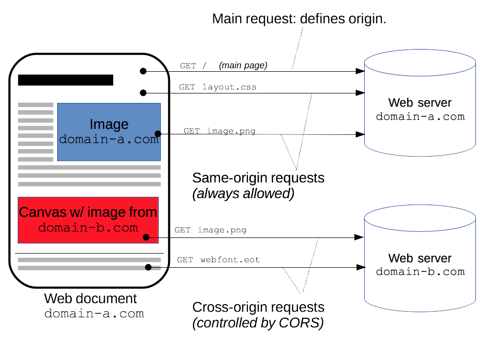
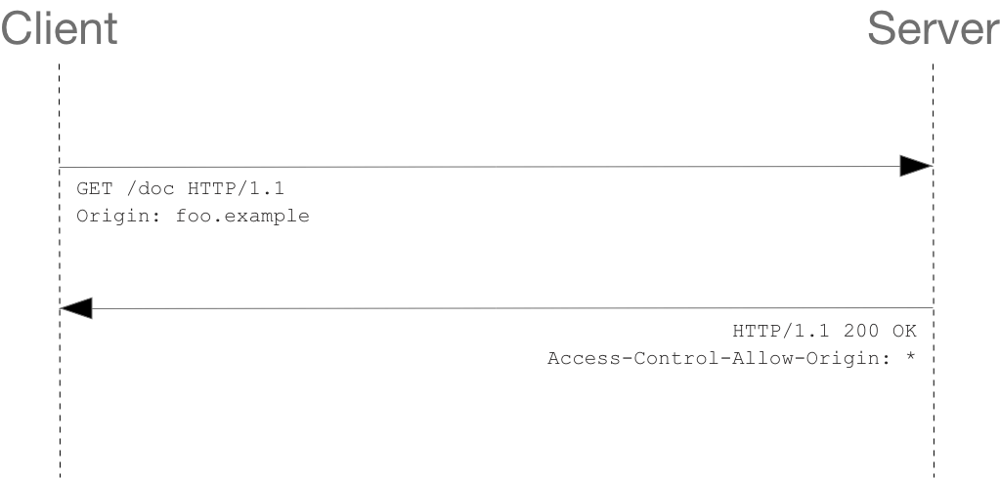

Cross-Origin Resource Sharing ({{Glossary("CORS")}}) is an {{Glossary("HTTP")}}-header based mechanism that allows a server to indicate any other {{glossary("origin")}}s (domain, scheme, or port) than its own from which a browser should permit loading of resources. CORS also relies on a mechanism by which browsers make a “preflight” request to the server hosting the cross-origin resource, in order to check that the server will permit the actual request. In that preflight, the browser sends headers that indicate the HTTP method and headers that will be used in the actual request.
An example of a cross-origin request: the front-end JavaScript code served from https://domain-a.com uses {{domxref("XMLHttpRequest")}} to make a request for https://domain-b.com/data.json.
For security reasons, browsers restrict cross-origin HTTP requests initiated from scripts. For example, XMLHttpRequest and the Fetch API follow the same-origin policy. This means that a web application using those APIs can only request resources from the same origin the application was loaded from unless the response from other origins includes the right CORS headers.

The CORS mechanism supports secure cross-origin requests and data transfers between browsers and servers. Modern browsers use CORS in APIs such as XMLHttpRequest or Fetch to mitigate the risks of cross-origin HTTP requests.
Everyone, really.
More specifically, this article is for web administrators, server developers, and front-end developers. Modern browsers handle the client side of cross-origin sharing, including headers and policy enforcement. But the CORS standard means servers have to handle new request and response headers.
This cross-origin sharing standard can enable cross-site HTTP requests for:
@font-face within CSS), so that servers can deploy TrueType fonts that can only be cross-site loaded and used by web sites that are permitted to do so.This article is a general discussion of Cross-Origin Resource Sharing and includes a discussion of the necessary HTTP headers.
The Cross-Origin Resource Sharing standard works by adding new HTTP headers that let servers describe which origins are permitted to read that information from a web browser. Additionally, for HTTP request methods that can cause side-effects on server data (in particular, HTTP methods other than {{HTTPMethod("GET")}}, or {{HTTPMethod("POST")}} with certain MIME types), the specification mandates that browsers "preflight" the request, soliciting supported methods from the server with the HTTP {{HTTPMethod("OPTIONS")}} request method, and then, upon "approval" from the server, sending the actual request. Servers can also inform clients whether "credentials" (such as Cookies and HTTP Authentication) should be sent with requests.
CORS failures result in errors, but for security reasons, specifics about the error are not available to JavaScript. All the code knows is that an error occurred. The only way to determine what specifically went wrong is to look at the browser's console for details.
Subsequent sections discuss scenarios, as well as provide a breakdown of the HTTP headers used.
We present three scenarios that demonstrate how Cross-Origin Resource Sharing works. All these examples use {{domxref("XMLHttpRequest")}}, which can make cross-site requests in any supporting browser.
Some requests don’t trigger a CORS preflight. Those are called “simple requests” in this article, though the {{SpecName('Fetch')}} spec (which defines CORS) doesn’t use that term. A “simple request” is one that meets all the following conditions:
application/x-www-form-urlencodedmultipart/form-datatext/plainxhr, no code has called xhr.upload.addEventListener() to add an event listener to monitor the upload.These are the same kinds of cross-site requests that web content can already issue, and no response data is released to the requester unless the server sends an appropriate header. Therefore, sites that prevent cross-site request forgery have nothing new to fear from HTTP access control.
WebKit Nightly and Safari Technology Preview place additional restrictions on the values allowed in the {{HTTPHeader("Accept")}}, {{HTTPHeader("Accept-Language")}}, and {{HTTPHeader("Content-Language")}} headers. If any of those headers have ”nonstandard” values, WebKit/Safari does not consider the request to be a “simple request”. What values WebKit/Safari consider “nonstandard” is not documented, except in the following WebKit bugs:
No other browsers implement these extra restrictions, because they’re not part of the spec.
For example, suppose web content at https://foo.example wishes to invoke content on domain https://bar.other. Code of this sort might be used in JavaScript deployed on foo.example:
const xhr = new XMLHttpRequest();
const url = 'https://bar.other/resources/public-data/';
xhr.open('GET', url);
xhr.onreadystatechange = someHandler;
xhr.send();
This performs a simple exchange between the client and the server, using CORS headers to handle the privileges:

Let's look at what the browser will send to the server in this case, and let's see how the server responds:
GET /resources/public-data/ HTTP/1.1 Host: bar.other User-Agent: Mozilla/5.0 (Macintosh; Intel Mac OS X 10.14; rv:71.0) Gecko/20100101 Firefox/71.0 Accept: text/html,application/xhtml+xml,application/xml;q=0.9,*/*;q=0.8 Accept-Language: en-us,en;q=0.5 Accept-Encoding: gzip,deflate Connection: keep-alive Origin: https://foo.example
The request header of note is {{HTTPHeader("Origin")}}, which shows that the invocation is coming from https://foo.example.
HTTP/1.1 200 OK Date: Mon, 01 Dec 2008 00:23:53 GMT Server: Apache/2 Access-Control-Allow-Origin: * Keep-Alive: timeout=2, max=100 Connection: Keep-Alive Transfer-Encoding: chunked Content-Type: application/xml […XML Data…]
In response, the server sends back an {{HTTPHeader("Access-Control-Allow-Origin")}} header with Access-Control-Allow-Origin: *, which means that the resource can be accessed by any origin.
Access-Control-Allow-Origin: *
This pattern of the {{HTTPHeader("Origin")}} and {{HTTPHeader("Access-Control-Allow-Origin")}} headers is the simplest use of the access control protocol. If the resource owners at https://bar.other wished to restrict access to the resource to requests only from https://foo.example, (i.e no domain other than https://foo.example can access the resource in a cross-site manner) they would send:
Access-Control-Allow-Origin: https://foo.example
When responding to a credentialed requests request, the server must specify an origin in the value of the Access-Control-Allow-Origin header, instead of specifying the "*" wildcard.
Unlike “simple requests” (discussed above), for "preflighted" requests the browser first sends an HTTP request using the {{HTTPMethod("OPTIONS")}} method to the resource on the other origin, in order to determine if the actual request is safe to send. Cross-site requests are preflighted like this since they may have implications to user data.
The following is an example of a request that will be preflighted:
const xhr = new XMLHttpRequest();
xhr.open('POST', 'https://bar.other/resources/post-here/');
xhr.setRequestHeader('X-PINGOTHER', 'pingpong');
xhr.setRequestHeader('Content-Type', 'application/xml');
xhr.onreadystatechange = handler;
xhr.send('<person><name>Arun</name></person>');
The example above creates an XML body to send with the POST request. Also, a non-standard HTTP X-PINGOTHER request header is set. Such headers are not part of HTTP/1.1, but are generally useful to web applications. Since the request uses a Content-Type of application/xml, and since a custom header is set, this request is preflighted.
As described below, the actual POST request does not include the Access-Control-Request-* headers; they are needed only for the OPTIONS request.
Let's look at the full exchange between client and server. The first exchange is the preflight request/response:
OPTIONS /doc HTTP/1.1 Host: bar.other User-Agent: Mozilla/5.0 (Macintosh; Intel Mac OS X 10.14; rv:71.0) Gecko/20100101 Firefox/71.0 Accept: text/html,application/xhtml+xml,application/xml;q=0.9,*/*;q=0.8 Accept-Language: en-us,en;q=0.5 Accept-Encoding: gzip,deflate Connection: keep-alive Origin: http://foo.example Access-Control-Request-Method: POST Access-Control-Request-Headers: X-PINGOTHER, Content-Type HTTP/1.1 204 No Content Date: Mon, 01 Dec 2008 01:15:39 GMT Server: Apache/2 Access-Control-Allow-Origin: https://foo.example Access-Control-Allow-Methods: POST, GET, OPTIONS Access-Control-Allow-Headers: X-PINGOTHER, Content-Type Access-Control-Max-Age: 86400 Vary: Accept-Encoding, Origin Keep-Alive: timeout=2, max=100 Connection: Keep-Alive
Lines 1 - 10 above represent the preflight request with the {{HTTPMethod("OPTIONS")}} method. The browser determines that it needs to send this based on the request parameters that the JavaScript code snippet above was using, so that the server can respond whether it is acceptable to send the request with the actual request parameters. OPTIONS is an HTTP/1.1 method that is used to determine further information from servers, and is a {{Glossary("safe")}} method, meaning that it can't be used to change the resource. Note that along with the OPTIONS request, two other request headers are sent (lines 9 and 10 respectively):
Access-Control-Request-Method: POST Access-Control-Request-Headers: X-PINGOTHER, Content-Type
The {{HTTPHeader("Access-Control-Request-Method")}} header notifies the server as part of a preflight request that when the actual request is sent, it will be sent with a POST request method. The {{HTTPHeader("Access-Control-Request-Headers")}} header notifies the server that when the actual request is sent, it will be sent with a X-PINGOTHER and Content-Type custom headers. The server now has an opportunity to determine whether it wishes to accept a request under these circumstances.
Lines 13 - 22 above are the response that the server sends back, which indicate that the request method (POST) and request headers (X-PINGOTHER) are acceptable. In particular, let's look at lines 16-19:
Access-Control-Allow-Origin: http://foo.example Access-Control-Allow-Methods: POST, GET, OPTIONS Access-Control-Allow-Headers: X-PINGOTHER, Content-Type Access-Control-Max-Age: 86400
The server responds with Access-Control-Allow-Origin: http://foo.example, restricting access to just the requesting origin domain. It also responds with Access-Control-Allow-Methods, which says that POST and GET are viable methods to query the resource in question (this header is similar to the {{HTTPHeader("Allow")}} response header, but used strictly within the context of access control).
The server also sends Access-Control-Allow-Headers with a value of "X-PINGOTHER, Content-Type", confirming that these are permitted headers to be used with the actual request. Like Access-Control-Allow-Methods, Access-Control-Allow-Headers is a comma separated list of acceptable headers.
Finally, {{HTTPHeader("Access-Control-Max-Age")}} gives the value in seconds for how long the response to the preflight request can be cached for without sending another preflight request. In this case, 86400 seconds is 24 hours. Note that each browser has a maximum internal value that takes precedence when the Access-Control-Max-Age is greater.
Once the preflight request is complete, the real request is sent:
POST /doc HTTP/1.1 Host: bar.other User-Agent: Mozilla/5.0 (Macintosh; Intel Mac OS X 10.14; rv:71.0) Gecko/20100101 Firefox/71.0 Accept: text/html,application/xhtml+xml,application/xml;q=0.9,*/*;q=0.8 Accept-Language: en-us,en;q=0.5 Accept-Encoding: gzip,deflate Connection: keep-alive X-PINGOTHER: pingpong Content-Type: text/xml; charset=UTF-8 Referer: https://foo.example/examples/preflightInvocation.html Content-Length: 55 Origin: https://foo.example Pragma: no-cache Cache-Control: no-cache <person><name>Arun</name></person> HTTP/1.1 200 OK Date: Mon, 01 Dec 2008 01:15:40 GMT Server: Apache/2 Access-Control-Allow-Origin: https://foo.example Vary: Accept-Encoding, Origin Content-Encoding: gzip Content-Length: 235 Keep-Alive: timeout=2, max=99 Connection: Keep-Alive Content-Type: text/plain [Some XML payload]
Not all browsers currently support following redirects after a preflighted request. If a redirect occurs after a preflighted request, some browsers currently will report an error message such as the following.
The request was redirected to 'https://example.com/foo', which is disallowed for cross-origin requests that require preflight
Request requires preflight, which is disallowed to follow cross-origin redirect
The CORS protocol originally required that behavior but was subsequently changed to no longer require it. However, not all browsers have implemented the change, and so still exhibit the behavior that was originally required.
Until browsers catch up with the spec, you may be able to work around this limitation by doing one or both of the following:
If that's not possible, then another way is to:
Response.url or XMLHttpRequest.responseURL in the first step.However, if the request is one that triggers a preflight due to the presence of the Authorization header in the request, you won’t be able to work around the limitation using the steps above. And you won’t be able to work around it at all unless you have control over the server the request is being made to.
When making credentialed requests to a different domain, third-party cookie policies will still apply. The policy is always enforced independent of any setup on the server and the client, as described in this chapter.
The most interesting capability exposed by both {{domxref("XMLHttpRequest")}} or Fetch and CORS is the ability to make "credentialed" requests that are aware of HTTP cookies and HTTP Authentication information. By default, in cross-site XMLHttpRequest or Fetch invocations, browsers will not send credentials. A specific flag has to be set on the XMLHttpRequest object or the {{domxref("Request")}} constructor when it is invoked.
In this example, content originally loaded from http://foo.example makes a simple GET request to a resource on http://bar.other which sets Cookies. Content on foo.example might contain JavaScript like this:
const invocation = new XMLHttpRequest();
const url = 'http://bar.other/resources/credentialed-content/';
function callOtherDomain() {
if (invocation) {
invocation.open('GET', url, true);
invocation.withCredentials = true;
invocation.onreadystatechange = handler;
invocation.send();
}
}
Line 7 shows the flag on {{domxref("XMLHttpRequest")}} that has to be set in order to make the invocation with Cookies, namely the withCredentials boolean value. By default, the invocation is made without Cookies. Since this is a simple GET request, it is not preflighted, but the browser will reject any response that does not have the {{HTTPHeader("Access-Control-Allow-Credentials")}}: true header, and not make the response available to the invoking web content.

Here is a sample exchange between client and server:
GET /resources/credentialed-content/ HTTP/1.1 Host: bar.other User-Agent: Mozilla/5.0 (Macintosh; Intel Mac OS X 10.14; rv:71.0) Gecko/20100101 Firefox/71.0 Accept: text/html,application/xhtml+xml,application/xml;q=0.9,*/*;q=0.8 Accept-Language: en-us,en;q=0.5 Accept-Encoding: gzip,deflate Connection: keep-alive Referer: http://foo.example/examples/credential.html Origin: http://foo.example Cookie: pageAccess=2 HTTP/1.1 200 OK Date: Mon, 01 Dec 2008 01:34:52 GMT Server: Apache/2 Access-Control-Allow-Origin: https://foo.example Access-Control-Allow-Credentials: true Cache-Control: no-cache Pragma: no-cache Set-Cookie: pageAccess=3; expires=Wed, 31-Dec-2008 01:34:53 GMT Vary: Accept-Encoding, Origin Content-Encoding: gzip Content-Length: 106 Keep-Alive: timeout=2, max=100 Connection: Keep-Alive Content-Type: text/plain [text/plain payload]
Although line 10 contains the Cookie destined for the content on http://bar.other, if bar.other did not respond with an {{HTTPHeader("Access-Control-Allow-Credentials")}}: true (line 17) the response would be ignored and not made available to web content.
CORS-preflight requests must never include credentials. The response to a preflight request must specify Access-Control-Allow-Credentials: true to indicate that the actual request can be made with credentials.
Some enterprise authentication services require TLS client certificates be sent in preflight requests, in contravention of the {{SpecName("Fetch","#cors-protocol-and-credentials")}} specification.
Firefox 87 allows this non-compliant behavior to be enabled by setting the preference: network.cors_preflight.allow_client_cert to true ({{bug(1511151)}}). Chromium-based browsers currently always send TLS client certificates in CORS preflight requests (Chrome bug 775438).
When responding to a credentialed request, the server must specify an origin in the value of the Access-Control-Allow-Origin header, instead of specifying the "*" wildcard.
Because the request headers in the above example include a Cookie header, the request would fail if the value of the Access-Control-Allow-Origin header was "*". But it does not fail: Because the value of the Access-Control-Allow-Origin header is "http://foo.example" (an actual origin) rather than the "*" wildcard, the credential-cognizant content is returned to the invoking web content.
Note that the Set-Cookie response header in the example above also sets a further cookie. In case of failure, an exception—depending on the API used—is raised.
Note that cookies set in CORS responses are subject to normal third-party cookie policies. In the example above, the page is loaded from foo.example, but the cookie on line 20 is sent by bar.other, and would thus not be saved if the user has configured their browser to reject all third-party cookies.
Cookie in the request (line 10) may also be suppressed in normal third-party cookie policies. The enforced cookie policy may therefore nullify the capability described in this chapter, effectively prevents you from making credentialed requests whatsoever.
Cookie policy around the SameSite attribute would apply.
This section lists the HTTP response headers that servers send back for access control requests as defined by the Cross-Origin Resource Sharing specification. The previous section gives an overview of these in action.
A returned resource may have one {{HTTPHeader("Access-Control-Allow-Origin")}} header, with the following syntax:
Access-Control-Allow-Origin: <origin> | *
Access-Control-Allow-Origin specifies either a single origin, which tells browsers to allow that origin to access the resource; or else — for requests without credentials — the "*" wildcard, to tell browsers to allow any origin to access the resource.
For example, to allow code from the origin https://mozilla.org to access the resource, you can specify:
Access-Control-Allow-Origin: https://mozilla.org Vary: Origin
If the server specifies a single origin (that may dynamically change based on the requesting origin as part of a white-list) rather than the "*" wildcard, then the server should also include Origin in the {{HTTPHeader("Vary")}} response header — to indicate to clients that server responses will differ based on the value of the {{HTTPHeader("Origin")}} request header.
The {{HTTPHeader("Access-Control-Expose-Headers")}} header lets a server whitelist headers that Javascript (such as {{domxref("XMLHttpRequest.getResponseHeader()","getResponseHeader()")}}) in browsers are allowed to access.
Access-Control-Expose-Headers: <header-name>[, <header-name>]*
For example, the following:
Access-Control-Expose-Headers: X-My-Custom-Header, X-Another-Custom-Header
…would allow the X-My-Custom-Header and X-Another-Custom-Header headers to be exposed to the browser.
The {{HTTPHeader("Access-Control-Max-Age")}} header indicates how long the results of a preflight request can be cached. For an example of a preflight request, see the above examples.
Access-Control-Max-Age: <delta-seconds>
The delta-seconds parameter indicates the number of seconds the results can be cached.
The {{HTTPHeader("Access-Control-Allow-Credentials")}} header indicates whether or not the response to the request can be exposed when the credentials flag is true. When used as part of a response to a preflight request, this indicates whether or not the actual request can be made using credentials. Note that simple GET requests are not preflighted, and so if a request is made for a resource with credentials, if this header is not returned with the resource, the response is ignored by the browser and not returned to web content.
Access-Control-Allow-Credentials: true
Credentialed requests are discussed above.
The {{HTTPHeader("Access-Control-Allow-Methods")}} header specifies the method or methods allowed when accessing the resource. This is used in response to a preflight request. The conditions under which a request is preflighted are discussed above.
Access-Control-Allow-Methods: <method>[, <method>]*
An example of a preflight request is given above, including an example which sends this header to the browser.
The {{HTTPHeader("Access-Control-Allow-Headers")}} header is used in response to a preflight request to indicate which HTTP headers can be used when making the actual request. This header is the server side response to the browser's {{HTTPHeader("Access-Control-Request-Headers")}} header.
Access-Control-Allow-Headers: <header-name>[, <header-name>]*
This section lists headers that clients may use when issuing HTTP requests in order to make use of the cross-origin sharing feature. Note that these headers are set for you when making invocations to servers. Developers using cross-site {{domxref("XMLHttpRequest")}} capability do not have to set any cross-origin sharing request headers programmatically.
The {{HTTPHeader("Origin")}} header indicates the origin of the cross-site access request or preflight request.
Origin: <origin>
The origin is a URL indicating the server from which the request initiated. It does not include any path information, but only the server name.
The origin value can be null.
Note that in any access control request, the {{HTTPHeader("Origin")}} header is always sent.
The {{HTTPHeader("Access-Control-Request-Method")}} is used when issuing a preflight request to let the server know what HTTP method will be used when the actual request is made.
Access-Control-Request-Method: <method>
Examples of this usage can be found above.
The {{HTTPHeader("Access-Control-Request-Headers")}} header is used when issuing a preflight request to let the server know what HTTP headers will be used when the actual request is made (such as with {{domxref("XMLHttpRequest.setRequestHeader()","setRequestHeader()")}}). This browser side header will be answered by the complementary server side header of {{HTTPHeader("Access-Control-Allow-Headers")}}.
Access-Control-Request-Headers: <field-name>[, <field-name>]*
Examples of this usage can be found above.
| Specification | Status | Comment |
|---|---|---|
| {{SpecName('Fetch', '#cors-protocol', 'CORS')}} | {{Spec2('Fetch')}} | New definition; supplants W3C CORS specification. |
The compatibility table in this page is generated from structured data. If you'd like to contribute to the data, please check out https://github.com/mdn/browser-compat-data and send us a pull request.
{{Compat("http.headers.Access-Control-Allow-Origin")}}
Internet Explorer 8 and 9 expose CORS via the XDomainRequest object, but have a full implementation in IE 10